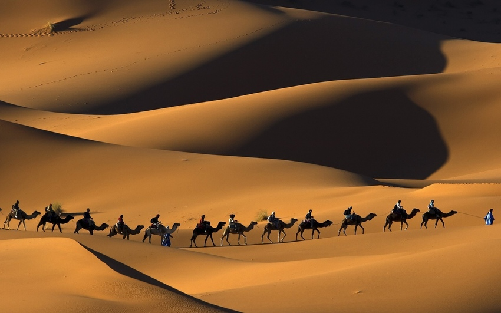
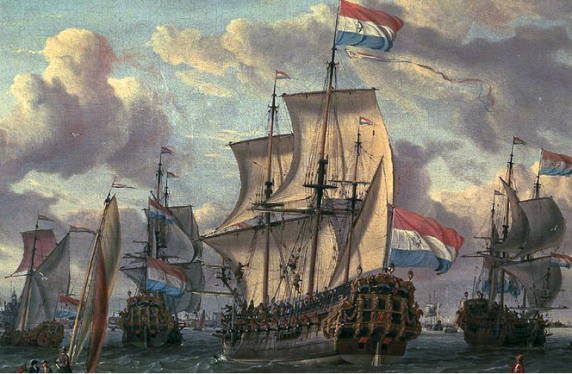
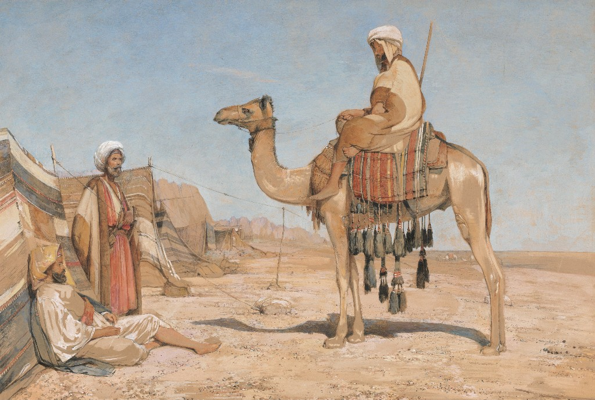
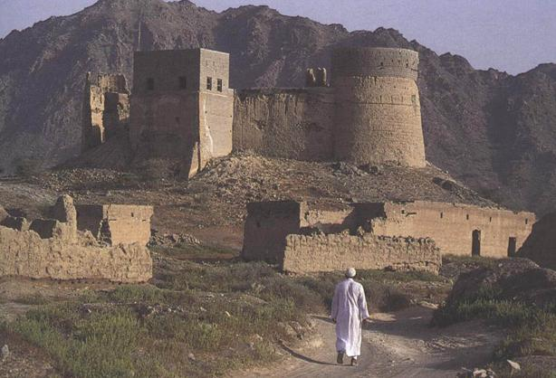
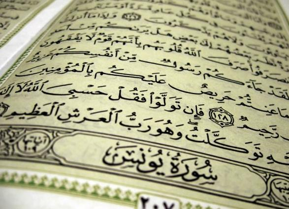
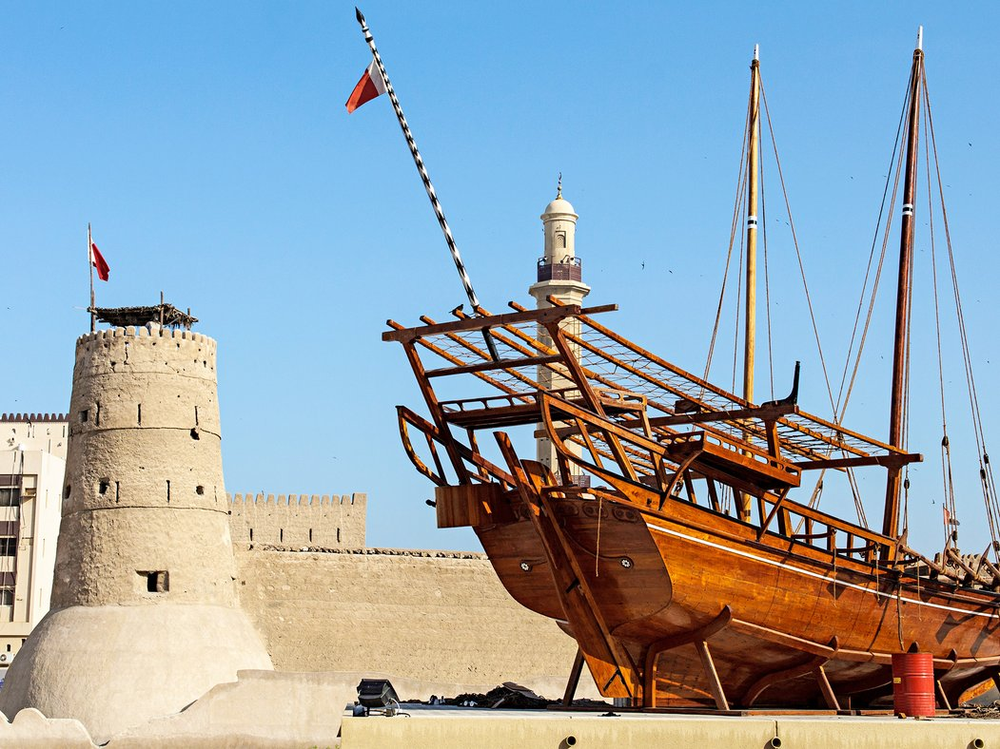
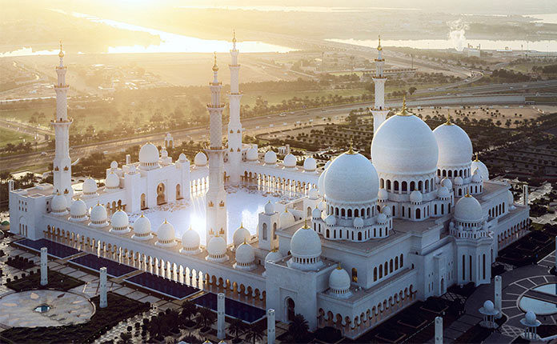
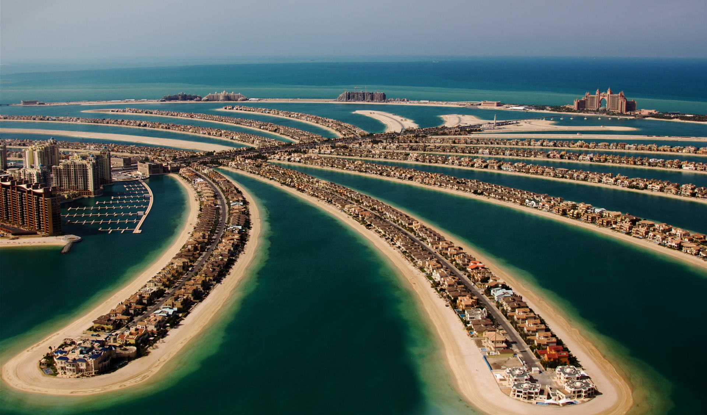
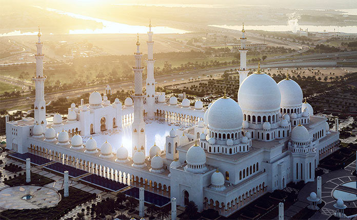
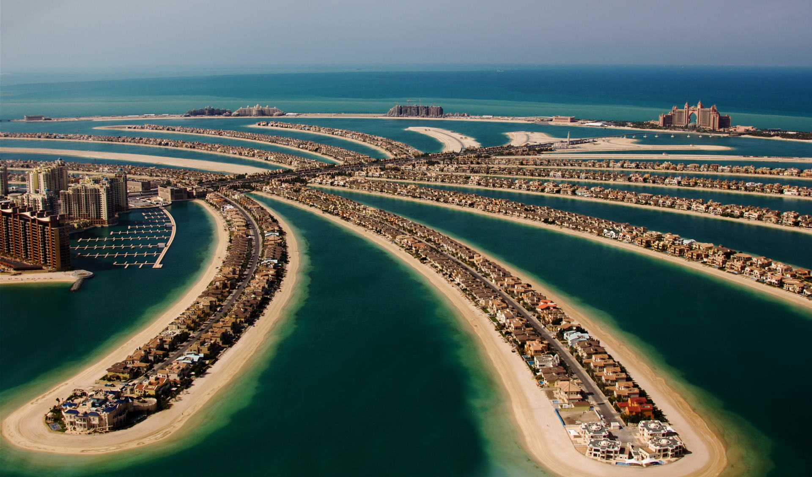

evolution
Dutch period (1650 - 1750)
The Dutch and the British acted together and helped the Arabs get rid of the Portuguese. But after the capture of Ormuz from the Portuguese in 1622, relations between the allies deteriorated. The British were based in Bandar Abbas (modern Iran), controlled the entrance to the Persian Gulf and demanded duties from the Dutch. The Dutch refused to pay.In commercial matters, the Dutch were more successful. They founded a trading post in Bandar Abbas and concluded an agreement with Shah Abbas I in 1623, according to which they received the right to free trade on the Persian (now Iranian) coast of the Persian Gulf. In ports in what is now the UAE, they were also more active.Dutch sailboat In 1652 the Anglo-Dutch War broke out. As a result, England lost its trading posts in Bandar Abbas and Basra. The Dutch came to dominate the Persian Gulf. In 1666, the Dutch founded a trading post in Muscat, through which they also traded with the emirates. The Dutch behaved much more civilized than the Portuguese. They did not seize ports, did not exterminate the population, did not impose Christianity. The Dutch and British in the Persian Gulf were only interested in trade. There was no talk of colonizing lands along the Persian Gulf. In the 1750s, the influence of the Dutch was greatly weakened as a result of the wars of England, France and Holland. By 1753, the Dutch had lost trading posts across almost the entire Indian Ocean, including all trading posts in the Persian Gulf. They were given the opportunity to settle on the island of Kharg, where the Dutch built a trading post and a fort.But here they tried to control the local population, an uprising broke out and in 1766 the local Arabs ousted the Dutch from the island. Dutch influence in the Persian Gulf came to an end.The Dutch left us a huge amount of documents telling about life in the emirates at that time. For example, we know for sure that the city of Julfa (now the emirate of Ras al-Khaimah) flourished throughout this period. We know that Arab ships were already able to travel long distances at that time. A document from 1646 tells of the arrival of a ship carrying sugar from Julfa to Basra. They write about Julfa: “There is a good harbor where the largest ships can land, there are more than 60 ships, most of them are large and well equipped, sailing to Mokka.” and Ras Al Khaimah, see our article "Sheikhs of the UAE"). Sheikh Rahma ibn Matar is mentioned as the emir of Julfa shortly after 1718, when he took part in the siege of the island of Hormuz. He is also mentioned in 1728 as one of the richest and most influential Arab merchants, the ruler of Julfa. The Dutch were the first to map the Persian Gulf and the coast of the Emirates. They organized exploratory expeditions to the coast. In 1644-1645, the Zimiuv ship arrived here, Captain Klee Speelman made a drawing of Dibba Bay - the first known image of the territory of the modern UAE. In 1666, the ship Mirkat sailed along the entire coast of the modern United Arab Emirates, captain Jacob Vogel compiled detailed reports.
  British period (1750 - 1971)
The English East India Company was formed in 1600. The British opened their main trading post in Bandar Abbas in 1623. At first, the coast of the Emirates was of little interest to them. By the middle of the 18th century, the British had driven out the Dutch. Arab Bani Yas The fall in the early 18th century of the Safavid dynasties in Persia and Yaarib in Oman led to a state of semi-anarchy in the region. Many maritime communities that had previously fled from the Portuguese returned to the emirates and settled on new bases. In Ras al-Khaimah, a strong center arose, headed by the Al-Qasimi clan, which controlled a significant part of the coast. In 1793, part of the Arab tribes of the Bani Yas union moved from the Liwa oasis to the coast. This is how the city of Abu Dhabi was born. They were led by Sheikh Al-Bu-Falah from the Al-Nahyan clan. The Al Nahyan family has ruled Abu Dhabi to this day. In 1883, a detachment of Arabs of the Bani Yas tribes advanced from Abu Dhabi to the east. They reached the city of Dubai and easily seized power. They were led by Maktum ibn-Butti from the Al-Maktum family. The Al Maktoum family has ruled Dubai to this day. During this period, the Persian Gulf was a very dangerous place. Al Qasimi's ships challenged Oman for dominance of the sea. The British supported Oman, supplied weapons, which led to an open conflict between England and Al-Qasimi. In 1806, England and Al-Qasimi made peace - the first official document of relations between the emirates and European countries. However, this treaty did not prevent attacks by Arab pirates on English ships. In fact, the war continued.British fleet battle In 1808, the British organized a military expedition that destroyed the Al-Qasimi fleet at the Battle of Ras al-Khaimah. Naval battles continued. In 1819, a large British fleet "walked" through Ras al-Khaimah, Umm al-Quwain, Ajman and Sharjah, destroying the fortifications. The British fleet gained complete control over the coast of the Emirates. In 1820, the Main Peace Treaty was concluded between the emirs and England. According to this agreement, hostilities ended, the emirs stopped piracy, did not have the right to build ships and forts. Article 9 of this treaty obliged the emirs to abolish slavery. The British characterized their policy towards the emirates as: "Sustainable control combined with friendly communication." Naval battles did not stop completely. In 1835, the Naval Truce was signed between England, Abu Dhabi, Dubai, Sharjah and Ajman, banning naval battles during the pearl harvest season. The British patrol provided stability and after 1843 hostilities almost ceased. In 1853, the Eternal Sea Peace was signed - a new treaty. After that, the coast of the Emirates began to be called "Treaty Oman" or "Treaty Coast". The British tried to secure their new telegraph lines and stations. Sheikhs received protection from the threat of the Ottoman Empire and Persia. The agreement was mutually beneficial. The Persians, Turks and French claimed the region. In 1892, an Exclusive Treaty was concluded. According to it, the British took full responsibility for the safety of the coast of the Emirates.In response, the sheikhs pledged not to conclude any agreements with other countries. Note that the British were only interested in the sea and trade. They almost did not interfere in the internal affairs of the emirs. The influence of England was so strong that the Persian Gulf was called "British Lake" in those days. In the emirates, pearl mining has become the main source of income. And although foreigners were involved in exports, profits were still high. The UAE still remembers this time, let's remember the waterfall in the Dubai Mall or the pearl fishing attraction in the Yas Waterworld water park. In 1830, English records give an income of about 3 tons of silver per season. Dubai in the early 20th century At the end of the 19th century, Dubai grew rich. Of course, by today's standards, it is difficult to call this wealth. See photo on the right, click to enlarge. In 1894, Sheikh Rashid signed a separate treaty with Great Britain, a little later, his brother Sheikh Maktoum exempted all foreign traders from taxes. Dubai becomes the main port of the Treaty Coast. In 1903, Sheikh Maktoum entered into an agreement with the British Shipping Company, and Dubai became the main port for British ships. In the 1920s, cultured pearls from Japan appeared on the world market, and then other countries. Pearl prices collapsed, and the emirates became poorer. The British began to be interested not only in affairs at sea. In 1932, British Imperial Airways established the first transfer airport in Sharjah.
  United Arab Emirates (1971 - our days)
Almost immediately after the British announcement of withdrawal from the Persian Gulf, Sheikhs Zayed Al-Nahyan (Emir of Abu Dhabi) and Rashid (Emir of Dubai) met on February 18, 1968 in Argub el-Sedira (on the border of the Emirates) and agreed on the creation of the UAE, despite to the territorial dispute between Dubai and Abu Dhabi. Over the next 3 years, Sharjah, Ajman, Umm al-Quwain and Fujairah joined the treaty. All aspects of the future union were discussed at a conference in Dubai on July 18, 1971. Officially, the state of the United Arab Emirates was created on December 2, 1971. Ras Al Khaimah joined on February 10, 1972. Dubai today. Bahrain declared independence on August 14, 1971 and never joined the UAE. Qatar declared independence on September 1, 1971; similarly, it did not join the UAE. An interim constitution was adopted, which was in effect until May 20, 1996, when it was declared permanent. Abu Dhabi became the capital of the country. Sheikh Zayed became the first president and was re-elected five times. After the death of Sheikh Zayed, Sheikh Khalifa Al Nahyan (his son, the new ruler of Abu Dhabi) became president. On May 19, 1973, its own currency, the UAE dirham, entered circulation. In about 50 years of its existence, the UAE has evolved from seven poor emirates with fishing villages to a prosperous modern country. Oil revenues, together with their reasonable use, have given all the wonders that tourists are now seeing in the UAE.UAE population today World's tallest building Burj Khalifa, Dubai's largest fountains, Dubai Mall, fastest Formula Rossa roller coaster at Ferrari World, Jebel Ali's largest artificial harbor, Burj Al Arab's tallest hotel, Emirates' most luxurious hotel Palace, the largest carpet and marble mosaic at the Sheikh Zayed Grand Mosque, Dubai's longest automated metro. And this is not a complete list of UAE records. For 50 years, not only living conditions have changed, but also the inhabitants of the Arab Emirates themselves. Now only 10% of the population are Arab citizens, the rest of the country's inhabitants are foreign workers, as we talked about in the article "Population of the UAE". However, the laws of the country remained based on Sharia, which you can read about in our article "The Laws of the UAE". The history of the United Arab Emirates is complex and confusing. People here have never lived happily ever after, but what a great finale, a real Happy-End.
 


